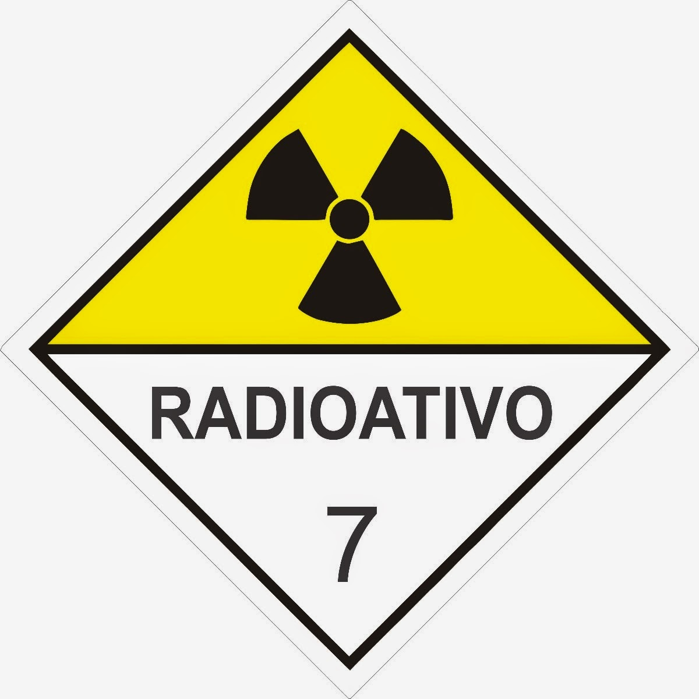
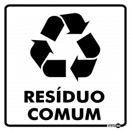
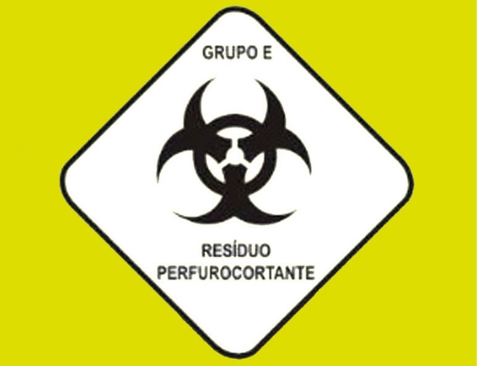

Tipos de Lixo Hospitalar
De acordo com a Resolução RDC nº 33/03, os resíduos hospitalares são classificados nos seguintes grupos:
A (potencialmente infectantes)
Possuem a presença de agentes biológicos que apresentem risco de infecção. Ex.: bolsas de sangue contaminado;
Resíduos potencialmente infectantes, ou resíduos de serviço de saúde que apresentam risco biológico (infectantes), são aqueles resíduos que apresentam possibilidade de estarem contaminados com agentes biológicos, tais como: bactérias, fungos, vírus, microplasmas, príons, parasitas, linhagens celulares e toxinas. A RDC 222/2018 da Anvisa classifica os resíduos perigosos do grupo A (Infectantes) em cinco subgrupos: A1, A2, A3, A4 e A5. Resíduos perfurocortantes (Grupo E) também podem estar contaminados com material possivelmente infectante. Confira a seguir uma relação dos tipos de resíduos que se encaixam em cada classificação:.Resíduos potencialmente infectantes, ou resíduos de serviço de saúde que apresentam risco biológico (infectantes), são aqueles resíduos que apresentam possibilidade de estarem contaminados com agentes biológicos, tais como: bactérias, fungos, vírus, microplasmas, príons, parasitas, linhagens celulares e toxinas. A RDC 222/2018 da Anvisa classifica os resíduos perigosos do grupo A (Infectantes) em cinco subgrupos: A1, A2, A3, A4 e A5. Resíduos perfurocortantes (Grupo E) também podem estar contaminados com material possivelmente infectante. Confira a seguir uma relação dos tipos de resíduos que se encaixam em cada classificação:.

B (químicos)
Que contenham substâncias químicas capazes de causar risco à saúde ou ao meio ambiente, independente de suas características inflamáveis, de corrosividade, reatividade e toxicidade. Por exemplo, medicamentos para tratamento de câncer, reagentes para laboratório e substâncias para revelação de filmes de Raio-X.
Resíduos químicos no estado sólido, quando não tratados, devem ser dispostos em aterro de resíduos perigosos – Classe I. Resíduos químicos no estado líquido devem ser submetidos a tratamento específico,sendo vedado o seu encaminhamento para disposição final em aterros. 03 – Os resíduos de substâncias químicas constantes do Apêndice VI da Resolução 306 quando não fizerem parte de mistura química, devem ser obrigatoriamente segregados e acondicionados de forma isolada. Devem ser acondicionados observadas as exigências de compatibilidade química dos resíduos entre si, assim como de cada resíduo com os materiais das embalagens de forma a evitar reação química entre os componentes do resíduo e da embalagem, enfraquecendo ou deteriorando a mesma, ou a possibilidade de que o material da embalagem seja permeável aos componentes do resíduo.

• C (rejeitos radioativos)
Materiais que contenham radioatividade em carga acima do padrão e que não possam ser reutilizados, como exames de medicina nuclear;
Comumente emprega-se a expressão lixo atômico como referência aos rejeitos radioativos. A CNEN mantém armazenadas em seus institutos fontes radioativas em desuso recebidas de clínicas médicas, hospitais, indústrias e centros de pesquisa. Além disso, o transporte, tratamento e armazenamento desses materiais são realizados em consonância com os padrões internacionais de segurança recomendados pela Agência Internacional de Energia Atômica (AIEA).
No início da era nuclear, os rejeitos de baixa atividade chegaram a ser jogados em valas. Essa prática era adotada em vários reatores nucleares, inclusive o de Oak Ridge National Laboratory. Esse laboratório foi estabelecido a partir de 1943 a fim de produzir e separar plutônio para ser usado em bomba atômica durante a Segunda Guerra Mundial no Projeto Manhattan. Os rejeitos de alta atividade são combustíveis exauridos. A cada ano, 1/3 do combustível nuclear queimado é trocado por um novo. Este tem ainda de 0,7% a 0,8 % de urânio-235 e de 0,6% a 0,7% de plutônio. Por ser altamente radioativo e muito quente, é estocado em uma piscina com profundidade de 10 m a 12 m localizada no próprio reator ou nas proximidades do prédio do reator, por no mínimo cinco anos e no máximo uns 40 anos. Quando a piscina fica lotada, o rejeito é colocado nos chamados dry casks, que são cilindros de tipicamente 5,2 m de comprimento, 2,5 a 3,5 m de diâmetro e 150 toneladas de peso. Até a presente data não há no mundo depósito permanente de rejeito de combustível queimado de reator. Os Estados Unidos possuem atualmente 97 reatores de potência alta operacionais, 36 desativados e dois em construção, segundo IAEA/PRIS. Já produziram 75 mil toneladas de rejeito altamente radioativo de combustível queimado que estão armazenadas em piscinas de seus reatores ou em dry casks.
D (resíduos comuns)
Qualquer lixo hospitalar que não tenha sido contaminado ou possa provocar acidentes, como gesso, luvas, gazes, materiais passíveis de reciclagem e papéis;
É constituído por sobras e do preparo de alimentos (cascas de frutas, verduras, borras de café, etc.), papel higiênico, absorventes higiênicos, restos de podas e jardinagem, resíduos provenientes de áreas administrativas e uma grande diversidade de outros itens.
E (perfurocortantes)
Objetos e instrumentos que possam furar ou cortar, como lâminas, bisturis, agulhas e ampolas de vidro.
Os materiais perfurocortantes devem ser descartados separadamente, no local de sua geração, imediatamente após o uso ou necessidade de descarte, em recipientes, rígidos, resistentes à punctura, ruptura e vazamento, com tampa, devidamente identificados, atendendo aos parâmetros referenciados na norma NBR 13853/97 da ABNT, sendo expressamente proibido o esvaziamento desses recipientes para o seu reaproveitamento. Os resíduos perfurocortantes contaminados com agente biológico Classe de Risco 4, micro-organismos com relevância epidemiológica e risco de disseminação ou causador de doença emergente que se torne epidemiologicamente importante ou cujo mecanismo de transmissão seja desconhecido, devem ser submetidos a tratamento, utilizando-se processo físico ou outros processos que vierem a ser validados para a obtenção de redução ou eliminação da carga microbiana, em equipamento compatível com Nível III de Inativação Microbiana. Dependendo da concentração e volume residual de contaminação por substâncias químicas perigosas, estes resíduos devem ser submetidos ao mesmo tratamento dado à substância contaminante. Os resíduos contaminados com radionuclídeos devem ser submetidos ao mesmo tempo de decaimento do material que o contaminou. As seringas e agulhas utilizadas em processos de assistência à saúde, inclusive as usadas na coleta laboratorial de amostra de paciente e os demais resíduos perfurocortantes não necessitam de tratamento, devem ser respeitados os procedimentos de segurança.
